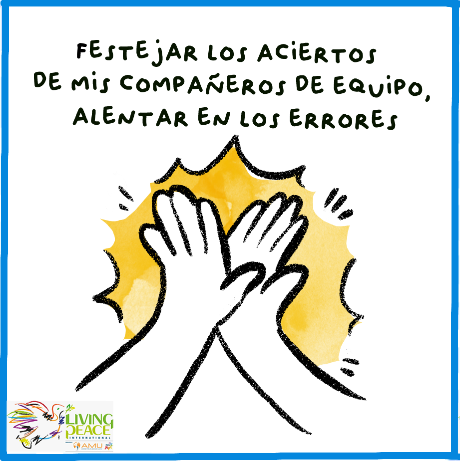

TU GESTO DE JUEGO LIMPIO
Festejar los aciertos de mis compañeros de equipo, alentar en los errores
Vive esta cara como una acción concreta de paz.
DEPORTE · PARA LA PAZ
Lanza el dado y transforma la competencia en respeto, trabajo en equipo y alegría compartida.

Vive esta cara como una acción concreta de paz.
LAS SEIS CARAS
Pulsa una tarjeta para descubrir cómo vivir la paz dentro y fuera del juego.
“El juego se vuelve paz cuando competimos con respeto y celebramos la dignidad de todos.”
Respeto · Equipo · Juego limpio